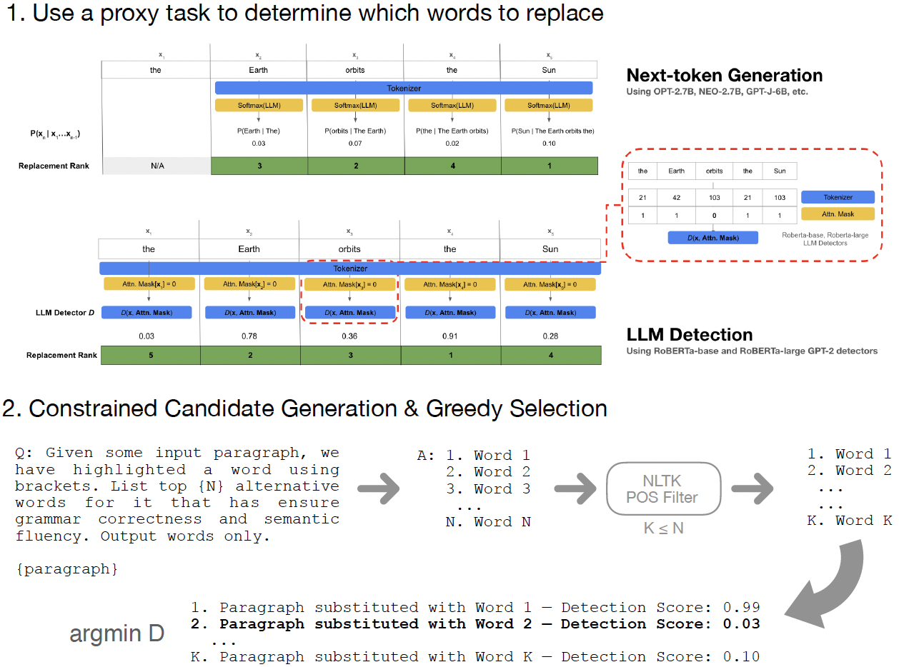
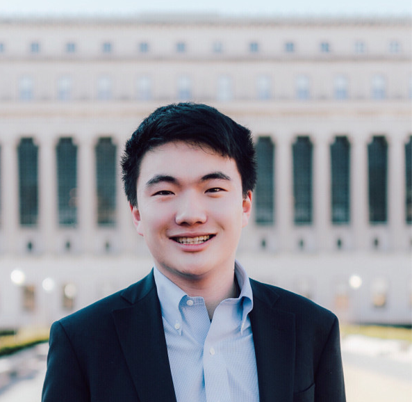

Applied Machine Learning Engineer
James Wang
I am a recent graduate of Columbia University, with a M.S. and B.S. degree in Computer Science. I am currently an Applied Machine Learning Engineer at Snorkel AI. Previously, I was a Machine Learning Engineer at Atlassian, where I worked on search relevance and ML infrastructure. I'm interested in computer vision, computational biology, and the security and robustness of machine learning systems. If you are interested in these things as well, let's chat!

Research
I have previously worked in Columbia's Computer Vision Lab advised by Prof. Carl Vondrick with PhD student Chengzhi Mao and Columbia's Computational Biology Lab advised by Prof. Elham Azizi. I have also worked in Prof. Dana Pe'er's group at Memorial Sloan-Kettering Cancer Center with PhD student Yubin Xie.
Service
Reviewer: CVPR 2023
I enjoy teaching and have worked with Prof. Tony Dear, Prof. Peter Belhumeur, and Prof. Nakul Verma for the following courses:
Head Teaching Assistant
- COMS 4701: Artificial Intelligence (Spring 2022)
- COMS 4995: Deep Learning for Computer Vision (Fall 2021)
Teaching Assistant
- COMS 3251: Computational Linear Algebra (Spring 2021)
- COMS 4701: Artificial Intelligence (Summer 2021)
- COMS 4733: Computational Aspects of Robotics (Fall 2021)
- COMS 4995: Deep Learning for Computer Vision (Fall 2020)